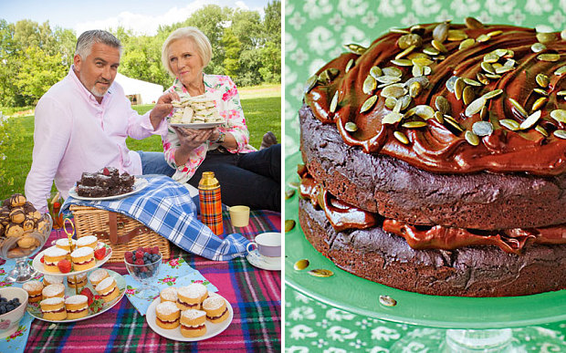

union case Shape.Circle: radius: double -> Shape
Multiple items
val double : value:'T -> double (requires member op_Explicit)
Full name: Microsoft.FSharp.Core.ExtraTopLevelOperators.double
--------------------
type double = System.Double
Full name: Microsoft.FSharp.Core.double
val double : value:'T -> double (requires member op_Explicit)
Full name: Microsoft.FSharp.Core.ExtraTopLevelOperators.double
--------------------
type double = System.Double
Full name: Microsoft.FSharp.Core.double
union case Shape.Square: side: double -> Shape
union case Shape.Rectangle: width: double * height: double -> Shape
union case Shape.Triangle: baseLength: double * perpHeight: double -> Shape
val perimeter : s:Shape -> float
Full name: Index.perimeter
Full name: Index.perimeter
val s : Shape
val r : double
namespace System
type Math =
static val PI : float
static val E : float
static member Abs : value:sbyte -> sbyte + 6 overloads
static member Acos : d:float -> float
static member Asin : d:float -> float
static member Atan : d:float -> float
static member Atan2 : y:float * x:float -> float
static member BigMul : a:int * b:int -> int64
static member Ceiling : d:decimal -> decimal + 1 overload
static member Cos : d:float -> float
...
Full name: System.Math
static val PI : float
static val E : float
static member Abs : value:sbyte -> sbyte + 6 overloads
static member Acos : d:float -> float
static member Asin : d:float -> float
static member Atan : d:float -> float
static member Atan2 : y:float * x:float -> float
static member BigMul : a:int * b:int -> int64
static member Ceiling : d:decimal -> decimal + 1 overload
static member Cos : d:float -> float
...
Full name: System.Math
field System.Math.PI = 3.14159265359
val w : double
val h : double
val l : double
val b : double
System.Math.Sqrt(d: float) : float
val area : s:Shape -> float
Full name: Index.area
Full name: Index.area
val a : float
Full name: Index.a
Full name: Index.a
val ce : bool
Full name: Index.ce
Full name: Index.ce
val multiply : a:int -> b:int -> int
Full name: Index.multiply
Full name: Index.multiply
val a : int
val b : int
val multiplyBy2 : (int -> int)
Full name: Index.multiplyBy2
Full name: Index.multiplyBy2
val multiplyBy4 : (int -> int)
Full name: Index.multiplyBy4
Full name: Index.multiplyBy4
val r : int
Full name: Index.r
Full name: Index.r
val result : int list
Full name: Index.result
Full name: Index.result
Multiple items
module List
from Microsoft.FSharp.Collections
--------------------
type List<'T> =
| ( [] )
| ( :: ) of Head: 'T * Tail: 'T list
interface IEnumerable
interface IEnumerable<'T>
member GetSlice : startIndex:int option * endIndex:int option -> 'T list
member Head : 'T
member IsEmpty : bool
member Item : index:int -> 'T with get
member Length : int
member Tail : 'T list
static member Cons : head:'T * tail:'T list -> 'T list
static member Empty : 'T list
Full name: Microsoft.FSharp.Collections.List<_>
module List
from Microsoft.FSharp.Collections
--------------------
type List<'T> =
| ( [] )
| ( :: ) of Head: 'T * Tail: 'T list
interface IEnumerable
interface IEnumerable<'T>
member GetSlice : startIndex:int option * endIndex:int option -> 'T list
member Head : 'T
member IsEmpty : bool
member Item : index:int -> 'T with get
member Length : int
member Tail : 'T list
static member Cons : head:'T * tail:'T list -> 'T list
static member Empty : 'T list
Full name: Microsoft.FSharp.Collections.List<_>
val map : mapping:('T -> 'U) -> list:'T list -> 'U list
Full name: Microsoft.FSharp.Collections.List.map
Full name: Microsoft.FSharp.Collections.List.map
val filter : predicate:('T -> bool) -> list:'T list -> 'T list
Full name: Microsoft.FSharp.Collections.List.filter
Full name: Microsoft.FSharp.Collections.List.filter
val factorial : _arg1:int -> int
Full name: Index.factorial
Full name: Index.factorial
val n : int
val factorialB : n:int -> int
Full name: Index.factorialB
Full name: Index.factorialB
val reduce : reduction:('T -> 'T -> 'T) -> list:'T list -> 'T
Full name: Microsoft.FSharp.Collections.List.reduce
Full name: Microsoft.FSharp.Collections.List.reduce
val fb : int
Full name: Index.fb
Full name: Index.fb
val newState : oldState:'a -> event:'b -> unit
Full name: Index.newState
Full name: Index.newState
val oldState : 'a
val event : 'b
val t : Shape
Full name: Index.t
Full name: Index.t
val triangleArea : float
Full name: Index.triangleArea
Full name: Index.triangleArea
val maybeCalculateArea : s:Shape option -> float
Full name: Index.maybeCalculateArea
Full name: Index.maybeCalculateArea
val s : Shape option
union case Option.Some: Value: 'T -> Option<'T>
val shape : Shape
union case Option.None: Option<'T>
val someTriangle : Shape option
Full name: Index.someTriangle
Full name: Index.someTriangle
val noTriange : 'a option
Full name: Index.noTriange
Full name: Index.noTriange
val areaSomeTriangle : float
Full name: Index.areaSomeTriangle
Full name: Index.areaSomeTriangle
val areaNoTriangle : float
Full name: Index.areaNoTriangle
Full name: Index.areaNoTriangle
type Result<'TSuccess,'TFailure> =
| Success of 'TSuccess
| Failure of 'TFailure
Full name: Index.Result<_,_>
| Success of 'TSuccess
| Failure of 'TFailure
Full name: Index.Result<_,_>
union case Result.Success: 'TSuccess -> Result<'TSuccess,'TFailure>
Multiple items
union case Result.Failure: 'TFailure -> Result<'TSuccess,'TFailure>
--------------------
active recognizer Failure: exn -> string option
Full name: Microsoft.FSharp.Core.Operators.( |Failure|_| )
union case Result.Failure: 'TFailure -> Result<'TSuccess,'TFailure>
--------------------
active recognizer Failure: exn -> string option
Full name: Microsoft.FSharp.Core.Operators.( |Failure|_| )
val f : ('a -> Result<'b,'c>)
val g : ('b -> Result<'d,'c>)
val a : 'a
val s : 'b
union case Result.Failure: 'TFailure -> Result<'TSuccess,'TFailure>
val f : 'c
val processWebRequest : (obj -> Result<obj,obj>)
Full name: Index.processWebRequest
Full name: Index.processWebRequest

F#
F#
Welcome to the Functional Programming Appreciation Society
Andy Hutchinson
F#n Quiz
...
Name that car...
Name the plane...
Name that place...
Name the superhero...
Name the band...
Name a cool programming language starting with "F"...
Agenda
- Intro
- Boring Example
- F#od for Thought
- Brief and Indisputably Accurate History of Programming Languages
- Character Assassination of Object Oriented Language Design Features
About 30 minutes of pain...
What is F#
Microsoft's Functional Programming Language
V1.0 released in 2005 - Available within Visual Studio since 2010
Full compatibility with .NET Libs / Nuget / C# - 50:50 Solutions
Developed @ Microsoft Research, UK
Based on ML / StandardML / OCaml / Haskell
Source of inspiration for C#:
(Pattern matching, Tuples, Deconstruction, Local Functions, Nullable Reference Types, Records, Ranges...)
Why am I telling you about F#?
- I spent a year as an F# developer
- Restored my faith in humanity computers
- More concise and convenient - Get more done
- Amazing Compiler - Type Inference - Far Fewer Bugs
- Open Source
- Community - e.g. JavaScript Transpiler (this presentation...)
Dull Example
Absolute Classic...
...Shapes
Areas / Perimeters
- Circle
- Rectangle
- Square
- Triangle
C# vs F#
C# - Shape
1: 2: 3: 4: 5: |
|
C# - Circle
1: 2: 3: 4: 5: 6: 7: 8: 9: 10: 11: 12: 13: 14: 15: 16: |
|
C# - Rectangle
1: 2: 3: 4: 5: 6: 7: 8: 9: 10: 11: 12: 13: 14: 15: 16: 17: 18: |
|
C# - Square
1: 2: 3: 4: 5: |
|
C# - Triangle
1: 2: 3: 4: 5: 6: 7: 8: 9: 10: 11: 12: 13: 14: 15: 16: 17: 18: 19: |
|
F# Shapes
1: 2: 3: 4: 5: 6: 7: 8: 9: 10: 11: 12: 13: 14: 15: 16: 17: 18: 19: |
|
In Use..
C# - Square
1: 2: 3: 4: |
|
F# - Square
1: 2: 3: |
|
|
Cake

Recipe ??
Mary Berry Cake Recipe
Mary's Wonderful Sponge Cake
- Break the eggs into a large mixing bowl.
- Add the sugar, flour, baking powder and butter.
- Mix together until well combined with an electric hand mixer.
- Divide the mixture evenly between the tins.
- Bake the cakes on the middle shelf of the oven for 25 minutes.
Evil Paul Hollywood Cake Recipe
Paul has been Reading a Book...
...to help him achieve his plan for world domination
Paul's Mass Produced Cake
1: 2: 3: 4: 5: 6: 7: 8: 9: 10: 11: 12: 13: 14: 15: 16: 17: 18: 19: |
|
OO // Land of the Nouns
Data Centric -> Classes Are King
Methods Belong To Classes
-> Verbs Belong To Nouns
!= English
!= Natural Thought Process
OO-Induced Damage...
... the code reading can be difficult
... the real world modeling of is slightly strange
Brief and Indisputably Accurate History of Programming Languages
All types of programming invented at roughly the same time
But... Procedural Languages Became Popular First
"Best" Thing In Procedural Languages were Structs / Data Records
1: 2: 3: 4: 5: 6: |
|
OO Languages Became Popular Next
OO Took the "Best" Thing In Procedural Languages & Made it "Better"
1: 2: 3: 4: 5: 6: 7: 8: 9: 10: 11: 12: 13: |
|
Structs -> Classes with Functions
Nouns own Verbs
Massive Design "Decision"
Functional Programming Has Hit The Big Time
#ProgrammingLikeFunctionsMatter #KingdomOfTheVerbs
PUT FUNCTIONS FIRST + Different Design Decisions
OO generalises over Data but FP generalises over Processes
1st Class Functions
- Killer Feature... All functions can take only 1 argument
1: 2: 3: 4: 5: |
|
|
1: 2: 3: 4: |
|
|
No Variables (Immutability)
Generally accepted that global variables are bad...
1: 2: 3: 4: 5: 6: 7: |
|
1: 2: 3: |
|
Or... 1 liner (Same as definition)
1: 2: |
|
|
Immutability - Entire Programs - Messages & Agents
- MailboxProcessors / Actors / Agents (like Erlang / Akka)
- Handling: Events / Messages
1:
|
|
Assassination Attempt
50 Billion Dollar Mistake
- Tony Hoare - Algol 60 (London, 1960s)
- Admitted his mistake in 2009
- ('Fixed' in C# 8.0 ... vs F# 1.0)
Null References
1: 2: 3: 4: 5: 6: 7: 8: 9: 10: 11: 12: 13: 14: 15: |
|
|
|
Exceptions

- Fred Brooks - PL/1 - 1960s
- Mythical Man Month
- To be fair, if you have null then you kind of need exceptions too...
Railway Oriented Programming
1: 2: 3: 4: 5: 6: 7: 8: 9: 10: 11: 12: 13: 14: 15: 16: 17: 18: 19: |
|